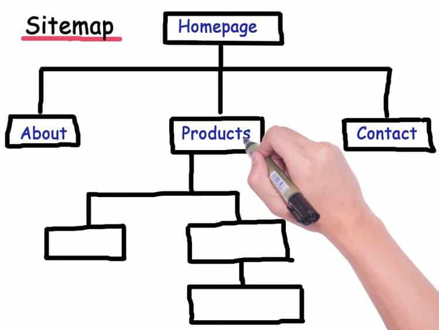
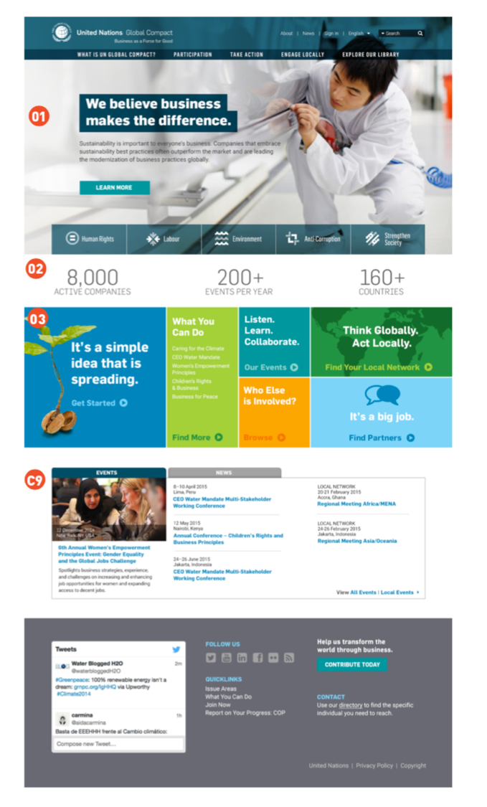

planning a website
sitemap → wireframe → mockup
sitemap: organized list / flow chart diagram → shows hierarchy and structure of website

wireframe: screen blueprint / visual guide → represents skeletal framework of website
- includes info / navigation / interface design
- excludes graphic (color / type / image) design

mockup: prototype → tests functions and completely designed
- style / graphics / images / color palette

launching a website
Steps
- Set up a local server (optional if 100% static HTML)
- Develop your website locally (on Sublime, Brackets etc.)
- Choose and set up your hosting service (Filezilla, Github etc.)
- Upload local copy of your website
- via FTP (File Transfer Protocol)
- via Github
- Test your live website
1. Set up a local server
- Go into the folder for your website containing your (index.html, styles, scripts, images) etc in terminal (can also drag into terminal)
cd /Users/username/Desktop/banana-flower-site
- Start a HTTP server on port 8000 using a built-in web server in Python
python -m SimpleHTTPServer 8000 (terminal)
py -m http.server (command prompt)
- See your website online on at "localhost:8000"
- To share you locally served website with your friends, get them to go on "[your ip address]:8000"
- To kill your server ctrl + c
4. Upload local copy of your website (via Github)
choose the directory you want to work in
cd Desktop
clone your repository to that directory
git clone [github repository url]
change directories into your cloned repository
cd [repository name]
add file to staging environment or index (tell git which files to commit)
git add .
commit files (record the changes you've made)
git commit -m "comment on the commit"
push files onto repository
git push
if not in current branch and you want to push to master branch
git push origin master
if working on a shared repository
make sure you pull files from shared repository before staging, committing and pushing
git pull